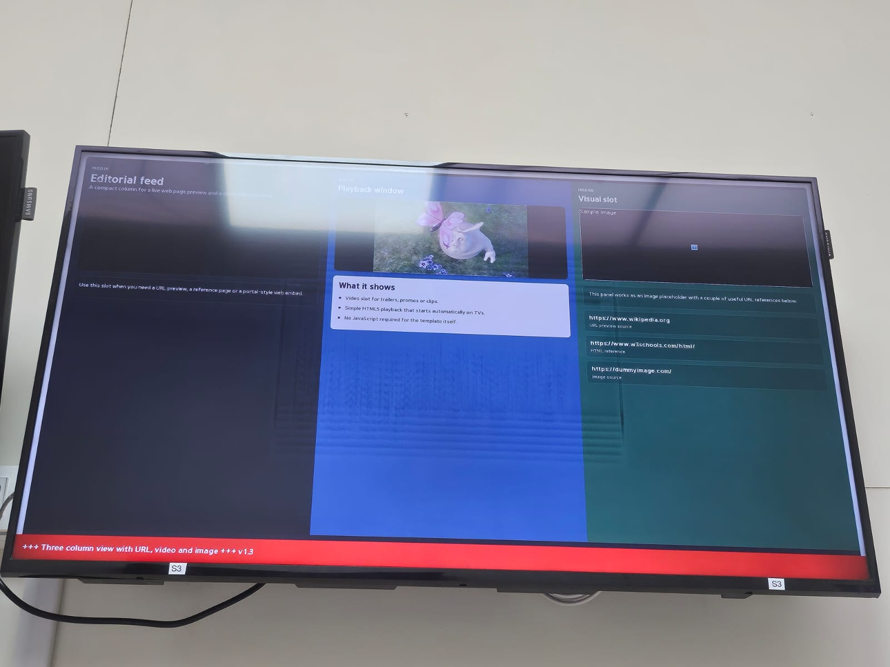

A compact column for a live web page preview and a short editorial note.
Use this slot when you need a URL preview, a reference page or a portal-style web embed.

This panel works as an image placeholder with a couple of useful URL references below.